A7 新林口 重劃區 - 建案匯總
建案地圖
A7新林口 重劃區 包含下面五個區塊，分別屬於四個行政里。
註：點擊上面 各里的超連接就能查Google Map 上面的實際範圍。 民國 107 年將原有的樂善里區分為樂善里及文青里。目前Google
地圖仍是就有的樂善里。已申請Google 更新。
建案介紹
- 建案地圖 桃園重劃區建案地圖
- 區域解析 2021/11/30 建案爆量的A7重劃區 優點缺點全解析
- ETtoday 2021/11/19 林口A7重劃區周邊區域怎選？
- 住展雜誌 2021/08 建案匯總圖
- 賞屋説說 2021/07/06: A7重劃區 區域分析
- 賞屋説說 2019/04/26: A7重劃區未來到底會不會空城？
{kind=link}
1. 樂善國小生活圈

2. 樂善科技園區周邊

3. 華亞科技園區周邊

4. 中心商業區及文青國中小生活圈

5. 合宜住宅區

| 建案 | 單價 | 交屋時間 | 投資建設 | 住宅類別 | 行政里 |
|---|---|---|---|---|---|
| {{post.no}}-{{post.建案}} | {{ post.單價 }} | {{ post.交屋時間 }} | {{ post.投資建設 }} | {{ post.土地分區 }} | {{ post.行政里 }} |
建案匯總
選擇類別
點擊 各建案名稱 進入 591 房屋交易網, 點擊 建案圖片 瀏覽 建案詳細資料。- {{post.no}}-{{post.建案}} ：{{post.投資建設}}
- 價格：{{post.單價}}, 車位：{{post.車位價格}}
- 地址: {{post.基地地址}}
- 交屋：{{post.交屋時間}}
- 影片：{{post.建案}}介紹
- FB: {{post.FacebookName}}
建商評比
-
寶佳集團：
- 合遠建設(2): 308 合遠新天地 311 文華天際
- 和發建設(2): 101 和發大境, 107 台北國際村
- 和耀建設(2): 203 耀台北, 207 和耀恆美
- 和峻建設(1): 富御捷境
- 和洲建設(1): 411 和洲金剛
- 鴻承建設(2): 305 根津苑, 310 水悅青青
- 鴻築建設(4): 102 鴻築鴻典, 103 鴻築樂捷市, 402 鴻築金捷市, 403 鴻築捷市達
- 佳晟建設(2): 104 奇幻莊園, 105 樂田田
- 皇普建設(1): 204 皇普MVP
- 富宇建設(6): 201 富宇上城, 205 富宇敦峰, 307 富宇悅峰, 407 富宇哈佛苑, 502 富宇天匯, 208 富宇致茂
- 遠雄建設(4): 409 遠雄新未來2, 410 遠雄新未來3, 501 遠雄新未來1, 506 遠雄文青
- 竹城建設(3): 401 竹城甲子園, 503 竹城明治, 504 竹城宇治
- 興富發建設(1): 306 華悅城
- 新潤建設(2): 303 新潤翡麗, 304 新潤鉑麗
- 玄泰建設(1): 206 玄泰V1
- 詠勝開發(1): 404 市中欣
- 禾聯建築(1): 202 禾悅花園
- 頤昌建設(2): 408 頤昌豐岳, 413 頤昌璞岳
- 允將建設(1): 301 允將大作
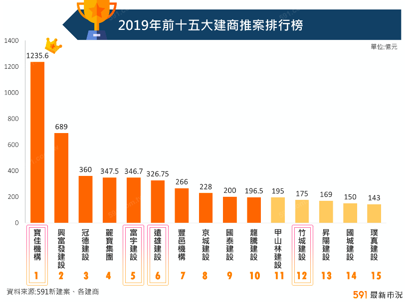
相關資訊
- 林口買房知識 2021/11/01 A7重劃區 區域分析
- ETtoday 2021/07/29: 10大影響力建商排行
- 社群實驗室 2021/04/19: 2021第一季建商聲量排行榜評析
- 591買房研究社 2021/01/29: 2020十大建商總銷排名
- 賞屋說說 2020/06/16: 建商品牌尬聊！你該買哪家？
- 痞客邦 2020/05/12: 林口有哪些建商？建築品質與建商風評非看不可
建設公司平均單價
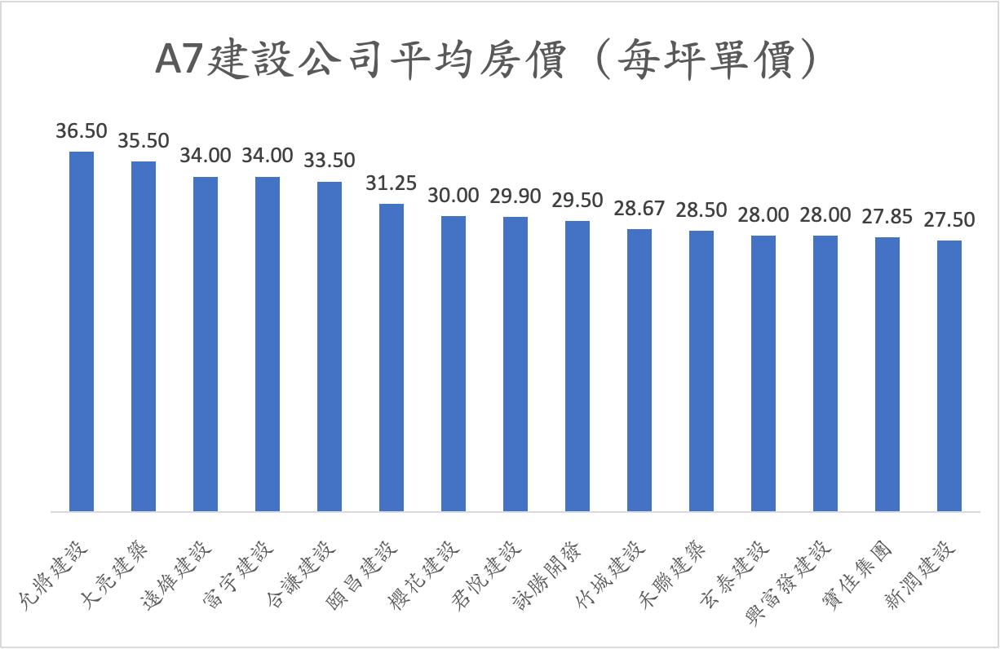
寶佳集團建案單價
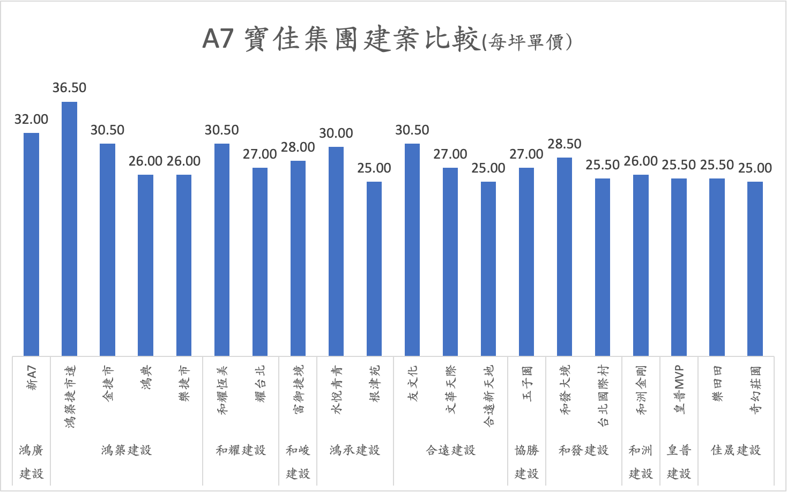
建設公司推案戶數
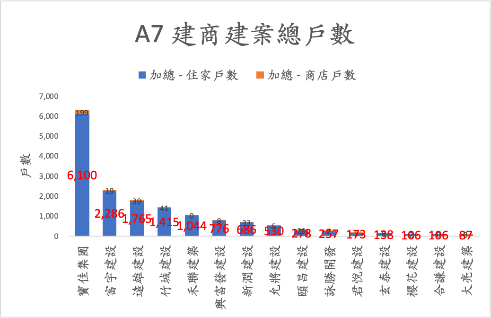
摘錄: 痞客邦 2020/05/12: 林口有哪些建商？建築品質與建商風評非看不可
2019年寶佳機構以破1200億奪下推案王，北台灣推量就接近800億元，推案重心擺在土地存貨量大的新興重劃區，新北與桃竹等地的除劃區都有寶佳的身影。近十年除了2017年外，寶佳已拿下九次冠軍。大家都說寶佳機構的房子要小心，可是為什麼他的銷售量這麼好呢?寶佳機構蓋的房子應該說只在及格邊緣，蓋的速度都相當快，價格便宜是他的優勢，但是建材品質與配備都相對較陽春，點交後可能公共設施壁面漏水、車道epoxy破裂...等小問題不斷，雖不危及社區住宅安全，但後續的保養維護就得多花點心思；不過也有可能是因為建案的銷售量大，難免網路上負面的聲音也較多。
近年近年來建案版圖擴及新竹、桃園積極推案，2019年在A7就推了4個新建案，光富宇上城案量就達120億，在A7總案量逼近250億，位居2019年推案量的第5名
興富發的建案稱不上是豪宅，但也不算便宜，負面評價也很多，例如格局不好、建材不佳，但銷售量很好卻是不爭的事實，興富發最為人稱讚的就是1.品牌塑造能力 2.老闆的市場嗅覺，董事長鄭欽天奉行「在什麼時機、在什麼地點、蓋什麼樣的房子、賣什麼價格、賣給什麼人」五W策略，例如他的公設很豪華，很容易吸引到首購，近年大坪數總價高不好賣，他馬上推出小坪數低總價的產品。
寶佳機構
寶佳機構1991年成立，在桃園發跡，旗下有40餘間建設公司，林陳海董事長2016年大舉投資各家金融業，包括台新金持股將近10%，永豐金持股9%，還持股華票17%，引發金融業極大關注。2019年寶佳機構以破1200億奪下推案王，北台灣推量就接近800億元，推案重心擺在土地存貨量大的新興重劃區，新北與桃竹等地的除劃區都有寶佳的身影。近十年除了2017年外，寶佳已拿下九次冠軍。大家都說寶佳機構的房子要小心，可是為什麼他的銷售量這麼好呢?寶佳機構蓋的房子應該說只在及格邊緣，蓋的速度都相當快，價格便宜是他的優勢，但是建材品質與配備都相對較陽春，點交後可能公共設施壁面漏水、車道epoxy破裂...等小問題不斷，雖不危及社區住宅安全，但後續的保養維護就得多花點心思；不過也有可能是因為建案的銷售量大，難免網路上負面的聲音也較多。
富宇建設
富宇建設 (股票代號:4907)是台中的知名建商，成立於1988年，到目前已有多達130棟建築，民國104年與105年連續2年榮獲台灣建築金獎三冠王，包括台灣誠信建商、金獅獎、金象獎的殊榮。營造起家的富宇，從規劃、設計、營造乃至機電，都有自己的專屬團隊負責。整體來講，品質算不錯，相當重視公設營造，購屋客對於富宇建設的售後服務也是相當滿意，價格會比當地的其他一般的建案高一點。近年近年來建案版圖擴及新竹、桃園積極推案，2019年在A7就推了4個新建案，光富宇上城案量就達120億，在A7總案量逼近250億，位居2019年推案量的第5名
遠雄建設
遠雄建設 (股票代號:5522)1969年成立，至今已超過50個年頭，目前整個集團已跨足金融保險、空運物流、遊憩休閒、巨蛋園區、百貨流通、新創育成、及文化藝術公益等八大事業體，創辦人趙藤雄的資產也因此累積逾15.3億美元，榮登富比士台灣40富豪之一，排名第27。2004年先在林口、三峽購地造鎮，之後又陸續在內湖、八德等地推出造鎮社區，目前在A7重劃區已推出「遠雄新未來第一期」於2017年下半年開始銷售，總銷達110億，總戶數827戶，每坪開價29~32萬元，前後銷售共18個月，全數銷罄、「遠雄新未來2」，銷售金額約60億，「遠雄新未來3」，銷售金額約45億，是龜山A7重劃區史上規模最大的造鎮計畫。遠雄的價格其實不便宜，可議價的空間也不多，品質倒底好不好呢?有人說還不錯，但有糾紛的也不少，常見的漏水、牆壁不平、公設問題、工務售後服務品質不佳，這些也是時有耳聞，不過整體上，大家對於遠雄的品質還算是有信心的，這也可以從遠雄的銷售速度觀察得出來。竹城建設
竹城建設 於1996年成立，早年在桃園中正藝文特區周邊購置大量土地深耕20幾年，到現在已經創造萬戶成家的佳績，外觀一向給人日式簡約的形象，而且大部分建案挑選的位置也都不錯，雖然品質稱不上豪宅等級，但也有一定的水準；另外公司相當重視每位住戶的反饋，還特別成立售後服務中心，提供0800提供永久售後服務客服專線，定期提供免費的住宅勘檢服務；這幾年進軍林口，也累積了不少建案實績，而且銷售的成績也都相當好，近期在A7重劃區推出的竹城甲子園還是當區最大的建案，多達1207戶。興富發建設
興富發建設 (股票代號:2542)是以高雄起家的代銷天王鄭欽天於1989年入股宏巨建設，並於1999年掛牌上市，2003年更名為興富發，被業界稱為「南霸天」。 2019年北台灣的推案量約219億，全年度進場銷售建案總銷累積超過600億，是2019年推案量的亞軍，也是獵地王，打出低自備、提供建商無息貸款方案吸引不少首購族。2020年持續看好低利時代，共計推出新北板橋永翠二案、桃園青溪段案、台中惠安四、台南漁光三、高雄中都一、中都三、福山段、博孝億記等案，共計8筆，總銷金額525億元。興富發的建案稱不上是豪宅，但也不算便宜，負面評價也很多，例如格局不好、建材不佳，但銷售量很好卻是不爭的事實，興富發最為人稱讚的就是1.品牌塑造能力 2.老闆的市場嗅覺，董事長鄭欽天奉行「在什麼時機、在什麼地點、蓋什麼樣的房子、賣什麼價格、賣給什麼人」五W策略，例如他的公設很豪華，很容易吸引到首購，近年大坪數總價高不好賣，他馬上推出小坪數低總價的產品。
新潤建設
新潤建設 已成立12年，61年次董事長黃文辰原本是代銷出身，後來自行創業，早期在林口推出的「藏峰」、台北臨沂街「峰墅」、內湖「悅峰」「峰哲」、北投「和峰」等案，所有個案都在6個月售罄，2018年總推案量達188億，還因此榮登全台第六大建商。新潤機構是建築業率先喊出「建築業是服務業」的建設公司，強調在建材、施工、防水等細節，在一開始就規劃做好，避免完工後花更多時間及成本在事後的補強上，同時，每個建案都在舉辦2次施工說明會，第一次在完銷8成後，第二次則在結構完成後，從介紹房子怎麼蓋，包括結構、美感、公共空間，甚至施工流程，都會讓客戶清楚知道，更會讓建築師和客戶對談，藉著充分溝通，讓客戶滿意。 新潤建設機構經營已購客戶也相當用心，12年來歲末年終都會舉辦尾牙回饋住戶，2019年更在大直典華席開203桌，只要是購買新潤建設機構的已購客戶都能參加，看的出來若非他們對於自己售後服務的品質相當有信心，也無法做到這樣。玄泰建設
玄泰建設 在新北市深耕長達28年，擁有自己的甲級營造廠，過去在北投、淡水、板橋、新莊、三峽、泰山、樹林已累積非常多的作品，已推出28個建案，品質上還沒有聽說有什麼大問題，偶爾會有一些漏水的問題，不過我想漏水問題不管是什麼建案，多多少少都會有，重點還是在於建商處理的態度比較重要。玄泰建設在林口的建案有些地點還不錯，建材規格也較高，價格上也會反映出來，有些就偏遠一些，所以在也比較有議價的空間。詠勝開發
詠勝開發 成立於2009年，早期從樹林開始，2014詠勝尊悅、詠勝双享悅，近幾年轉而在林口累積不少建案，詠勝藏御1、2，詠勝A8、林語藏、2014詠勝雲賞、2014-11號公園、詠勝大來賞、A7市中欣，大部分都是150戶以內的小建案，只有A7市中心是257戶的中型建案，大概是A7那邊才能取得大面積的˙土地，品質上中規中矩沒什麼大問題，但也不會有什麼特別的驚喜，價格方面則是議價的空間較少禾聯建築
禾聯建築 董事長蔡金土於1998年創立禾聯股份有限公司，禾華營造公司為禾聯集團旗下的一員，具備甲級營造資格，過去以興建商用廠辦的經驗為主，具備堅實的建築實力。禾聯集團於2020年首次跨足住宅市場，於桃園龜山A7站產業專用區推出「禾悅花園」，結合自家純熟家電精工技術結晶，打造獨一無二的聲控智慧宅。頤昌建設
頤昌建設: 城市建築的運動家 在建築的道路上，頤昌建設以運動家的精神，永不放棄的堅持，改變城市風景，創造建築前進動力! 廣納國際宏觀的視野、內藏深厚的建築底蘊，頤昌建設專業和用心出發，注重每個細節的設計感與空間格局、建築品質，首創防水保固10年。（建設公司自評，希有客觀網路評論）允將建設
允將建設: 深根而枝葉茂，行久而瞻矚遠； 2002年創立的允將建設， 2017年總部進駐中台灣一級地段七期市政特區， 新環境、好團隊、大願景， 繼續推展更精采的典藏鉅作， 以人和為建築主軸，賦予生活美好價值， 允將專業團隊的這一份堅持， 是一路走來的初衷。允將建設專營興建集合住宅大樓。 （建設公司自評，希有客觀網路評論）購屋市場
房屋買賣網路社群-Facebook
- 實價登錄比價王 新建案比價
- 桃園市 不動產交易 e指通：重點區域, 交易熱度, 交易均價, 實價登錄, 社區實價, 統計資訊
- 內政部 不動產交易實價查詢 服務網 買賣查詢, 租賃查詢, 預售屋查詢, 預售屋建案備查
- A7重劃區房屋買賣 : 1.2萬成員
- 桃園龜山A7林口重劃區 : 1.3萬成員
- 好房網 2021/03/03: 林口A8~9 VS龜山A7
A7重劃區房價市場行情
- 樂善國小區：屬於第四種住宅區, 周邊鄰近酒廠、包裝廠等舊工業區，區段行情每坪20至25萬元。
- 中華郵政物流專區：是產業專區, 由大型企業主導開發，每坪24至25萬元。
- 文化一路商業區: 中心商業區加上第五種住宅區, 推案最集中，包括一般事務所、店面、聯通道與商場群聚，商業機能未來性最佳，單價來到22至26萬元。
- 雙語文青國中小生活圈：屬於第三種住宅區, 純住宅區段，有學區、自然保護區綠意串聯，等案，開價32至37萬元，環境單純安寧、生活品質最佳。
- 合宜住宅區：包含第五種住宅區及第三種住宅區，開發最早，屋齡約5年左右，屬於戶數眾多的超大型社區，屬於自成一格區塊，單價20萬元左右。
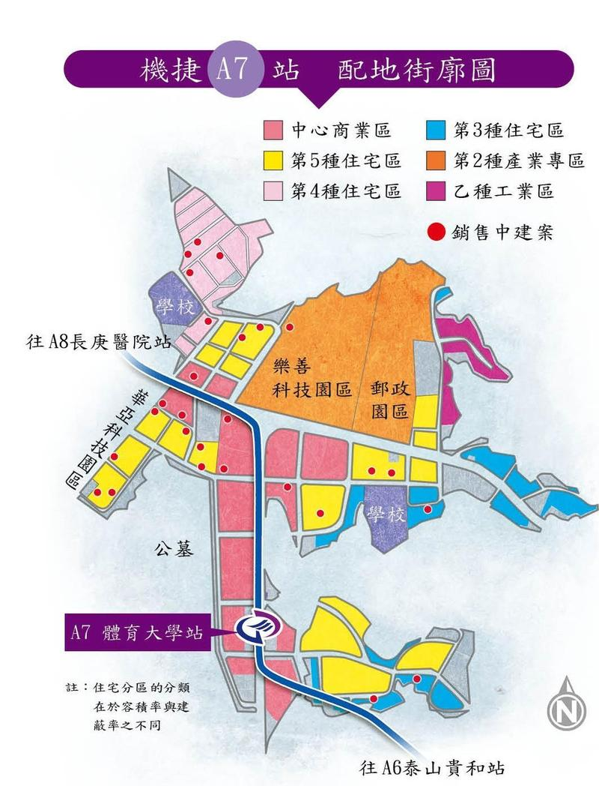
圖來自：鏡週刊, 國土規劃地理資訊圖台
住戶共同的問題
- 好房網 2021/06/17 大樓公電費用有夠貴！內行網友：原因是此「吃電怪獸」
- Line Hub 2021/06/15: 首購族新房交屋 驗屋攻略
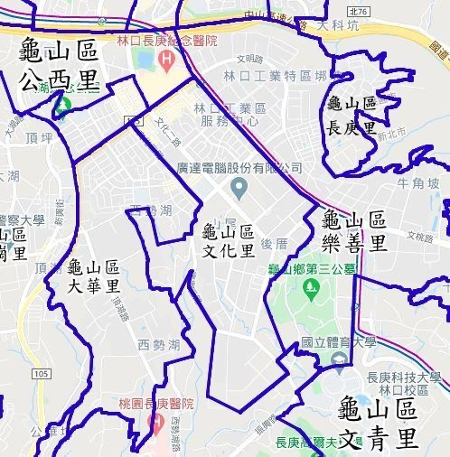
A7 房價市場行情
- Youtube 2021/09/04 林口A7重劃區歷史實價登錄 A7 房價時間推移圖
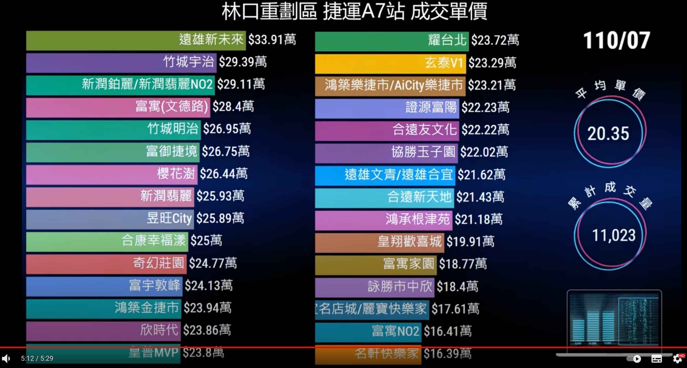
銷售排行
資料來源：房地產 2021/07/15| 排名 | 區域 | 交易量 | 平均坪數 | 平均總價 |
|---|---|---|---|---|
| 1 | 樂善科技園區周邊 | 103 | 44.5 | 1,161.6 |
| 2 | 文青國中小生活圈 | 95 | 37.8 | 945.4 |
| 3 | 華亞科技園區周邊 | 67 | 38.1 | 970.6 |
法令規定
房地合一稅 2.0 相關資訊- 財政部全球資訊網 房地合一2.0上路8大重點, 房地合一2.0改革6大重點
- 信義房屋 新舊比一比: 房地合一稅2.0 懶人包 6大修法重點一次告訴你！
| 類別 | 建蔽率 | 容積率 |
|---|---|---|
| 第三種住宅區 | 60% | 180% |
| 第四種住宅區 | 60% | 240% |
| 第五種住宅區 | 60% | 300% |
| 中心商業區 | 70% | 500% |
| 第二種產業專用區 | 70% | 420% |
六都房價指數
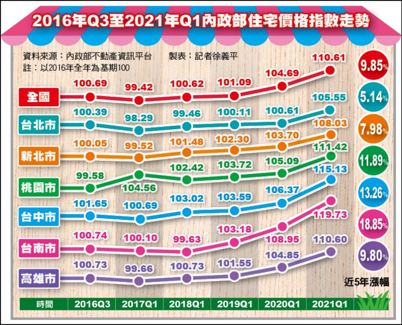
桃園2019-2021年住宅成交價走勢：資料來源為實價登錄, 每坪單價是採用算法B
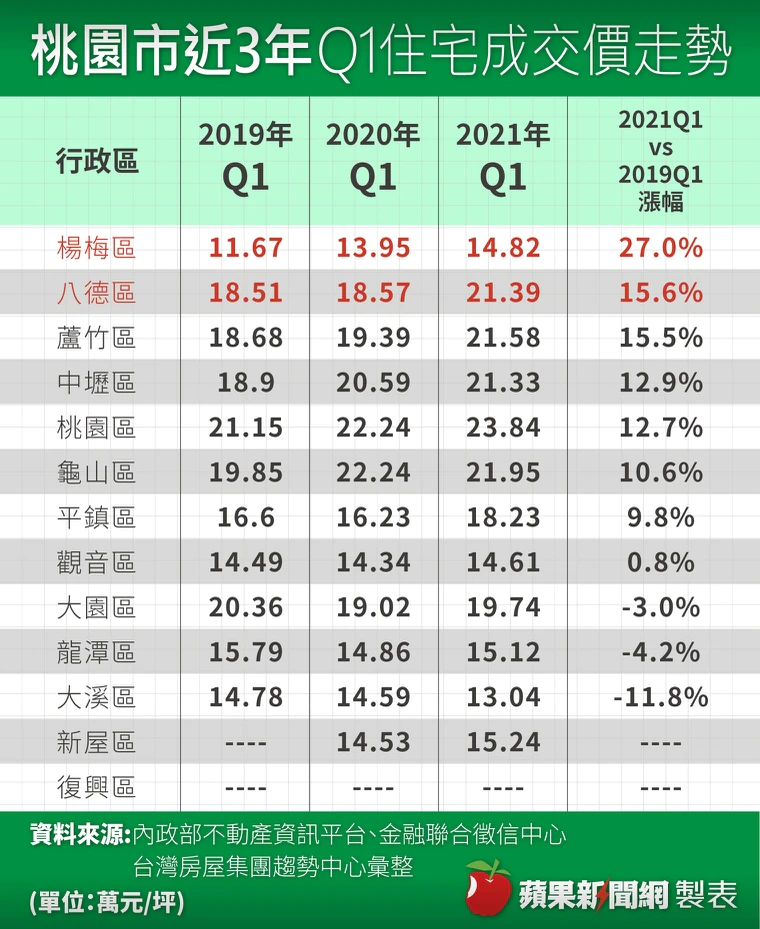
2020Q1至2021Ｑ1桃園各行政區平均房價。資料來源／實價登錄資料，永慶房產集團彙整。
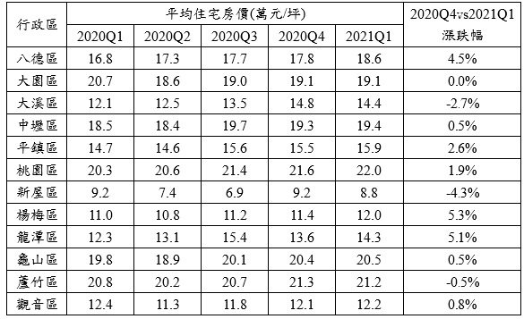
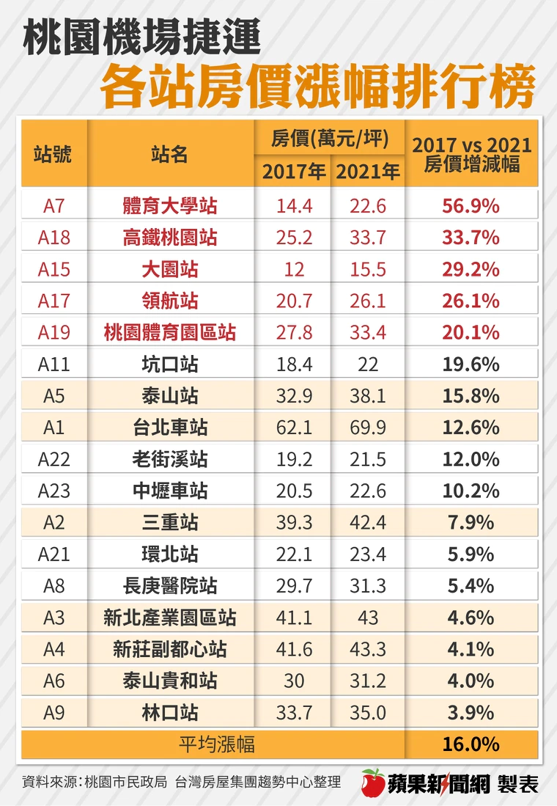
區域建設願景
龜山第三公墓/樂善公墓遷移計畫
相關報導:- Mobile01 2020/04/20 關於A7的公墓
為配合林口工五工業區(華亞工業區)都市計畫變更案，桃園市政府辦理龜山區第三公墓(樂善公墓)禁葬、遷葬，引發當地居民不滿，市議員林正峰在總質詢中，要求市府延緩徵收計畫。
市議員林正峰說，龜山區第三公墓是沿用好幾百年的公墓用地，據當地居民反映，當初是地主樂捐作為公墓用地，墓區有3萬多個骨灰罈，要遷葬非常困難，大家都無法認同市政府為了配合工五工業區擴大變更都市計畫問題，未進行協商溝通及意見整合下，逕行辦理龜山區第三公墓禁葬、遷葬，市議員林正峰強調，以前樂善寺在同意民眾埋葬的時候都有收費，有使用權憑證，具有永久使用權。希望市府與管委會和墓主協調，尊重所有權人的意見。
市長鄭文燦表示，林口工五工業區擴大都市計畫變更案目前尚在內政部營建署，過去樂善寺兩次來函前後意見並不一致，樂善寺若要進行相關財產處分，請樂善寺以1年為期，整合信徒意見後提出，市府將最大程度尊重樂善寺意見。
在未來長久作業期間是否能多種樹木來美化此一區域，讓A7住宅的高樓層能有美麗的視野？
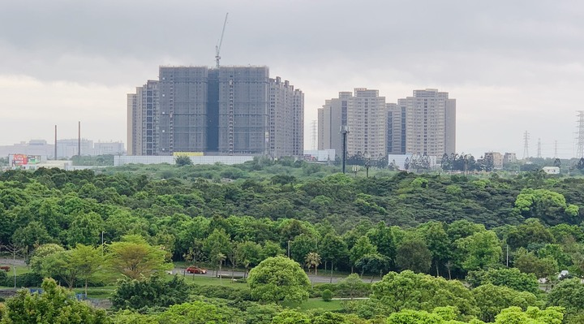
樂善科學園區開發
相關新聞來源- Facebook 2021/11/15 一人一留言@tag鄭文燦市長 － 請市長 重視A7重劃區小朋友的教育需求
- Facebook 2018/05/30 鄭文燦市長視察了A7合宜住宅地區的「桃園市立文青國民中小學」預定地
- ETtoday 2017/01/07: 發展「樂善科技園區」 打造桃園內湖科技園區
- 蘋果新聞網 2019/05/25: A7重劃區 千億建設開跑 捷運 科技園區 醫療
- Yahoo 新聞 2019/04/29: 龜山國民運動中心未取得土地 桃議員要求2020年4月如期動工
- 桃園電子報 2020/08/26: 局長掛保證 龜山文青國中小將如期招生
- 聯合新聞網 2021/04/17: 運動中心拖延 議員批淪政治口號
順達,致茂與禾聯碩廠區
樂善科技園區將是高效能, 低污染桃園版內湖科學園區。該區已由順達科技、致茂電子及禾揚國際（禾聯）等3家民間企業標下22.23公頃土地，其中致茂與禾聯碩各35%土地，順達科則取得30%土地。致茂電子預計設立新總部及生產基地，順達科技則做為新總部、研發、生產基地，禾聯碩則設定為電視、節能空調等產品的第2生產據點，3家預計共創造2300個以上的就業機會，年產值將達到1100億元。郵政物流園區
中華郵政斥資220億元打造「郵政物流園區」，佔地17.14公頃，涵蓋郵政物流中心、北台灣郵件作業中心、郵政資訊中心、郵政訓練中心及工商服務中心等5棟建築物，預計2021年完工?，屆時將有一部分人員先進駐，未來台北、桃園的郵件中心都將進行整併，移至A7，預計未來至少可創造6000個工作機會。中華郵政以建置智慧園區為目標，導入多項自動化設備進行郵件處理作業，推動物流共享平台，以及跨境電子商務物流服務，吸引很多廠商關注，還可望成為東亞地區跨境物流示範基地。
園區將採前店後廠方式開發，工商服務中心面臨40米文桃路，預計引入大型賣場、旅宿、商辦、會議展覽與訓練等，日前已招商，將採代租模式，依廠商需求興建，如招商順利，預計2022年完工。
園區仿效美國蘋果電腦在加州庫帕提諾新總部Apple Park「與自然共存」生態圈工法，建置寬40米、縱深400米，面積逾4000坪的郵政形象公園，連結近2公頃滯洪池，形成自然生態景觀，提供員工及附近居民的休憩場所。
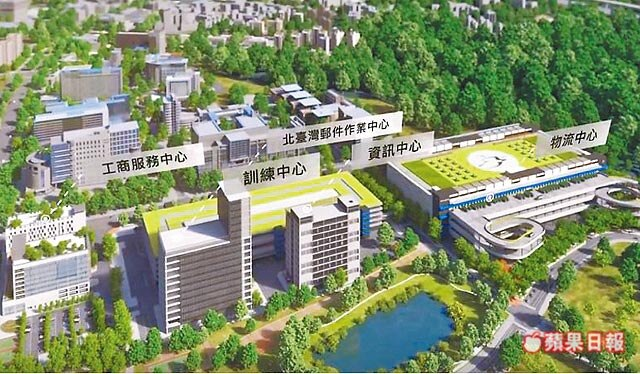
郵政物流園區 圖1
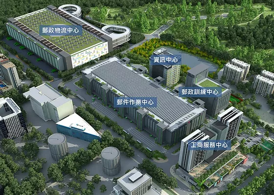
郵政物流園區 圖2
建設紀錄照片
文教建設規劃
興建大型的坪頂圖書分館?，重建坪頂派出所以及新設高中，為因應人口急遽增加，樂善國小已著手擴校計劃，文青國中小學也正在籌備中：籌備處設在大埔國小辦公室。文桃路增設文青國中小學，招收國中、國小各24班，並有7班幼兒園，幼兒園預計
2021/10/04 牛煦庭議會質詢: 文青國中小招標進度，新工處回應因應第一次流標，府內已檢討完畢，2021/10月將再招標。 教育局長也當場承諾112年8月的招生計畫不變。 需議員們列入高風險並加強監督的項目。
中時新聞網 2022/02/10 文青國中小終於在2021/12/27日決標，將在這月底動工，幼兒園預計2023年4月30日完工、同年8月31日國小部完工。 文青國中小幼兒園校舍規畫12間、國小校舍22間。學校規畫建置國小22班、國中12班，並預留12個班級的建置量體，將來可視學生數量彈性規畫新校舍，總計可招收1392名學生。
文青國中小預定地面積約4公頃，校地內有約1公頃的滯洪池，可規劃為學校的生態池，預計興建幼兒園、國小、國中、意象大樓及體育館等5棟校舍，其中幼幼班招收60人、混齡班3班招收90人，國小每年級招收4班，每班29人，國中每年級招收8班，預計招收720人。
2020/07/20: 空拍強哥 的空照圖中, 文青國中小用地仍是沒動靜？
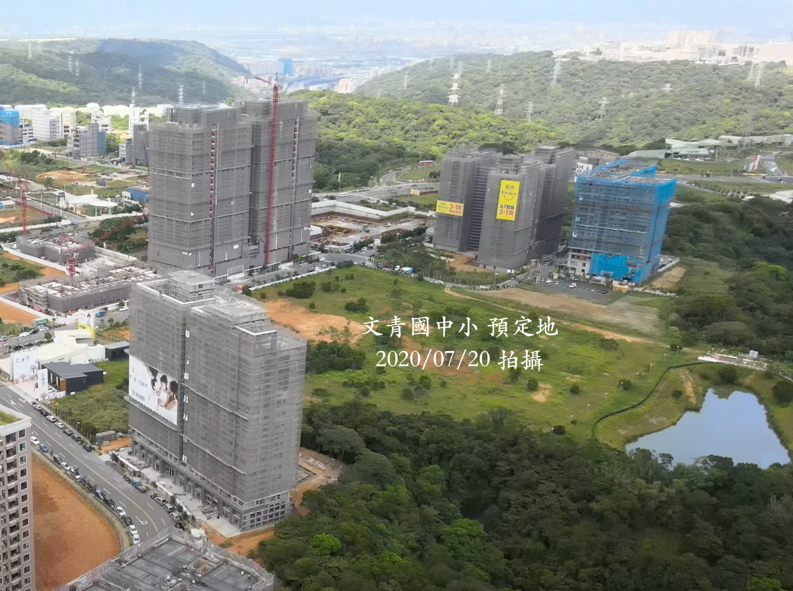
桃園市府 市政新聞 2020/01/06 新設大崗高中採分階段規劃 鄭市長指出，針對龜山區坪頂地區設置高中計畫，綜合各方意見提出兩個主要構想方案，提案一：大崗國中就地直接改制為大崗高中，但缺點為校地不太足以容納國、高中生同時使用；提案二：坪頂地區大崗國中旁文高三用地為「林口特定區都市計畫」之學校用地成立大崗高中，土地產權正透過容積移轉作業陸續取得，預計分階段進行設校規劃，亦為目前優先採行方向，新建工程以明（110）年底完成規劃設計為限，期間若土地取得有困難，則啟動評估提案一，也就是讓大崗國中就地改制完全中學的可行性。
早期教育局曾研議在體育大學附設實驗高中的可行性，教育局長林正峰2020/08/26強調，坪頂地區增設高中問題談了二十幾年，市府指派的坪頂高中設校籌備處主任（校長）未通過校長遴聘，派任迄今也未認真推動設校，坐領乾薪還有餘力與其前任學校同事訴訟打官司，對設校不抱太多期待。鑑於這幾年更因該地區人口成長快速，為確保並解決該地區學子就讀高中問題，建議市府優先推動大崗國中改制為完全中學。
龜山國民運動中心
預計興建龜山國民運動中心? ，原規劃2019年開始進行用地變更。2019/04/29 Yahoo 新聞稱：副市長李憲明和體育局長莊佳佳都表示，龜山區國民運動中心已選定於龜山區復興三路華亞園區內的機關用地，目前已著手辦理土地個案變更， 原預計2020年4月動工興建，約2027年6月完工。林議員尊重市府的法和規劃，要求市府即將籌編明年度預算時，務必將預算納入並於2020年4月如期動工。
2021/04/17 聯合新聞網稱：桃園市政府喊出要建設11座國民運動中心、5座體育園區，但牛煦庭議員質疑龜山與八德國民運動中心進度拖延，淪為政治口號。市府體育局指出，龜山國民運動中心新建工程經費約3.3億元，因向教育部體育署申請前瞻基礎建設計畫-充實全民運動環境計畫補助2億元，正由體育署審辦計畫書，經費尚未編列，才無法動工。運動設施科長姜相維也提到，龜山鄰近新北林口，為與林口國民運動中心區隔，因應龜山區新移入人口多，龜山國民運動中心規畫引進6歲以下孩童的體適能課程，迎合年輕家庭的需求。
2021/10/01 陳雅倫議員 質詢：龜山國民運動中心停滯 問題，體育局稱最遲 2022年1月 修訂計畫書送中央再審。原計畫書與林口國民運動中心的設施重疊性太高。 中國時報 2021/10/02 也指出 桃市府蓋運動場 執行率未過半， 龜山國民運動中心部分，規畫設計已有雛型，預算到位便能執行，內部場館配置會依經費多寡滾動式調整。 所以需要議員們持續加強監督力道。
公園規劃
2021/10/04 牛煦庭議員質詢：大坪頂公九公園 仍有部分私有地卡關。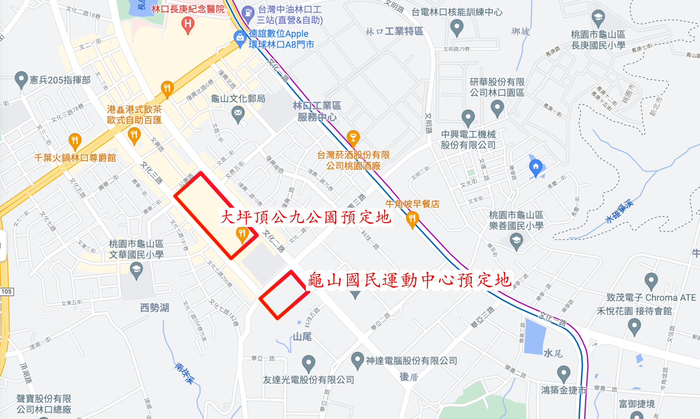
大數據分析 - 新建住宅
各分區新建案數
註：5.合宜住宅區 每坪均價只計算 新建案，不計算原有合宜住宅建案。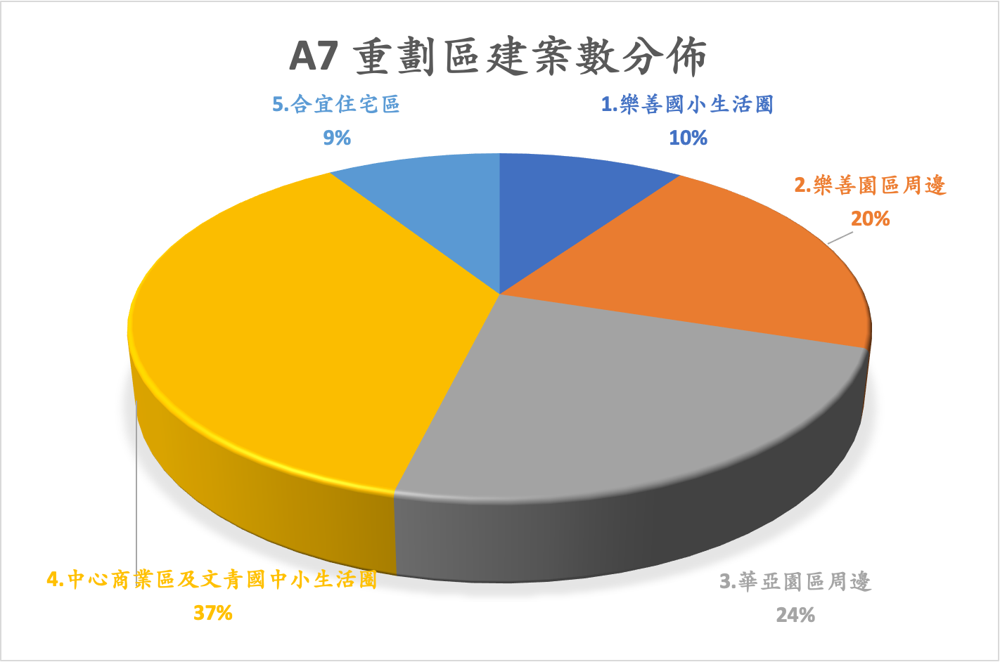
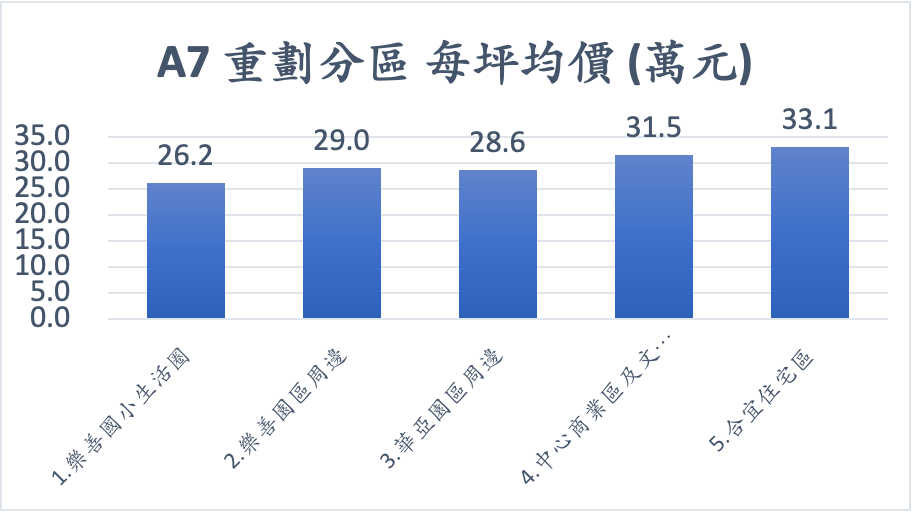
各分區 住家及商店數
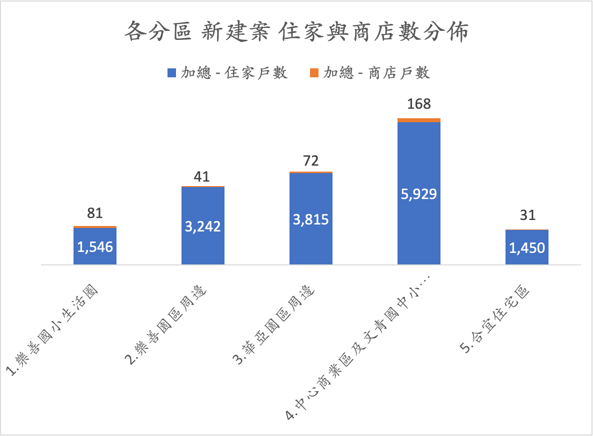
建案類別
依據都市住宅 分類, A7 重劃區的住宅類別及比例。第四種住宅集中在樂善國小生活圈。僅有少數建案且大多在早期就開發完成。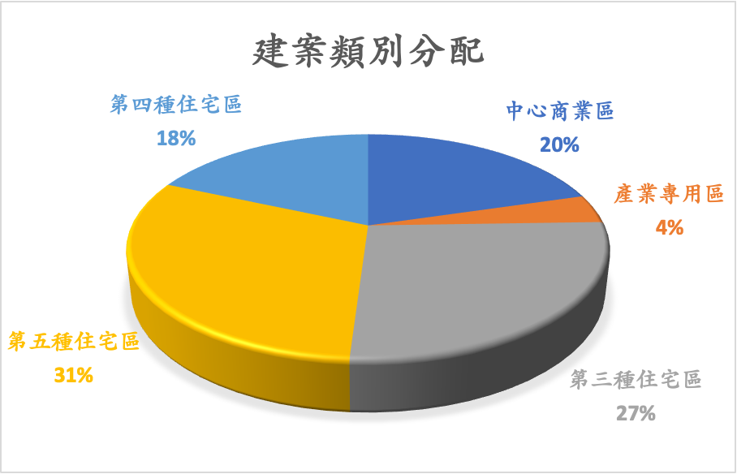
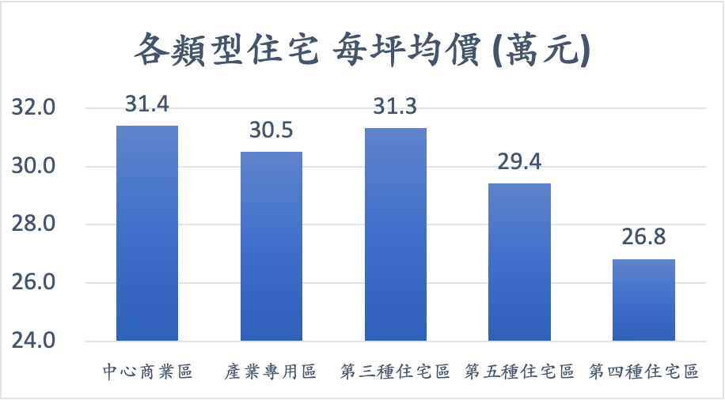
汽車停車位 設置比例
各建案 汽車停車位 / 戶數 的分配比例 統計圖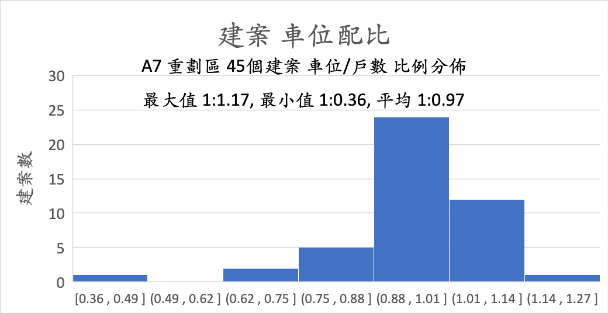
建設公司平均單價
建設公司推案戶數
預計交屋時程
依據購房網的預估時間，時程僅當大數據分析參考- 已交屋: 103 樂捷市, 104 奇幻莊園, 107 台北國際村, 203 耀台北, 205 富宇敦峰, 304 新潤鉑麗, 305 根津苑, 308 合遠新天地, 402 金捷市, 406 富御捷境, 503 竹城明治, 504 竹城宇治
- 2021 Q3: 105 樂田田, 309 友文化
- 2021 Q4: 106 玉子園, 204 皇普MVP, 303 新潤翡麗, 306 華悅城, 310 水悅青青, 401 竹城甲子園, 405 新A7, 411 和洲金剛, 501 新未來1, 505 櫻花澍
- 2022 Q1: 102 鴻典, 307 富宇悅峰, 408 頤昌豐岳
- 2022 Q2: 207 和耀恆美, 409 新未來2, 412 君邑丘比特, 414 合謙學
- 2022 Q3: 413 頤昌璞岳
- 2022 Q4: 101 和發大境, 206 玄泰V1, 404 詠勝市中欣
- 2023 Q1: 201 富宇上城
- 2023 Q2: 502 富宇天匯
- 2023 Q4: 302 欣時代, 403 鴻築捷市達, 407 富宇哈佛苑, 410 新未來3, 415 大亮時代A7
- 2024 Q2: 202 禾悅花園
- 2028 Q2: 301 允將大作
建案 住戶數及商店數
2021年以前 下表推出的新建案將 提供 15,982 個住戶 及 393 個店面。 整體龜山A7重劃區預計能推出 1.7萬戶。 相較於 同期四大重劃區 新北市 板橋江翠北側 1.15萬戶, 桃園市中路 1.52萬戶及 中壢青埔 1.34萬戶。龜山A7是最多的建案戶數。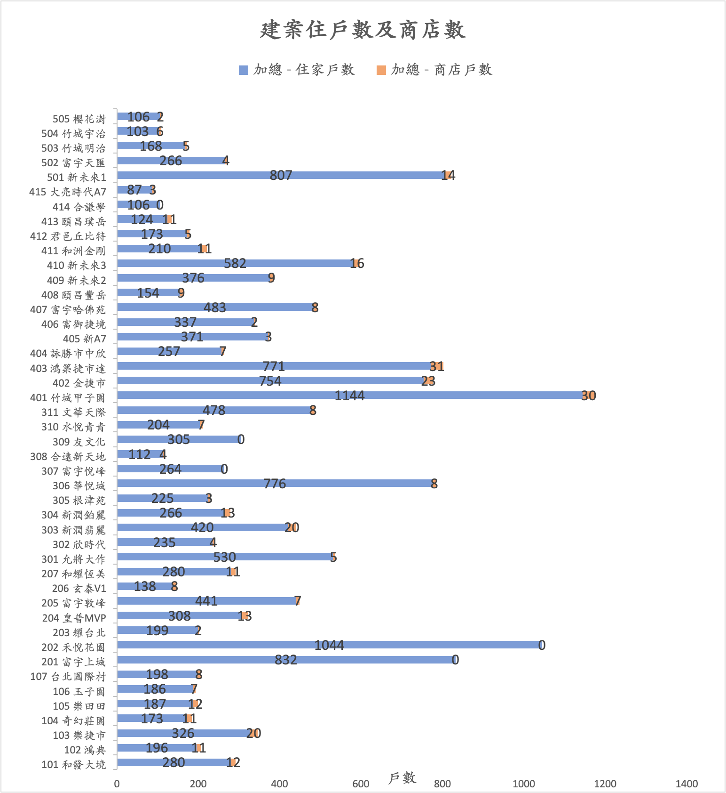
建案 每坪價格 (萬元）
價格主要依據 591 房屋網的標價，實際價格須依據建商開價為準。整體標價平均值 為每坪 29-31萬元。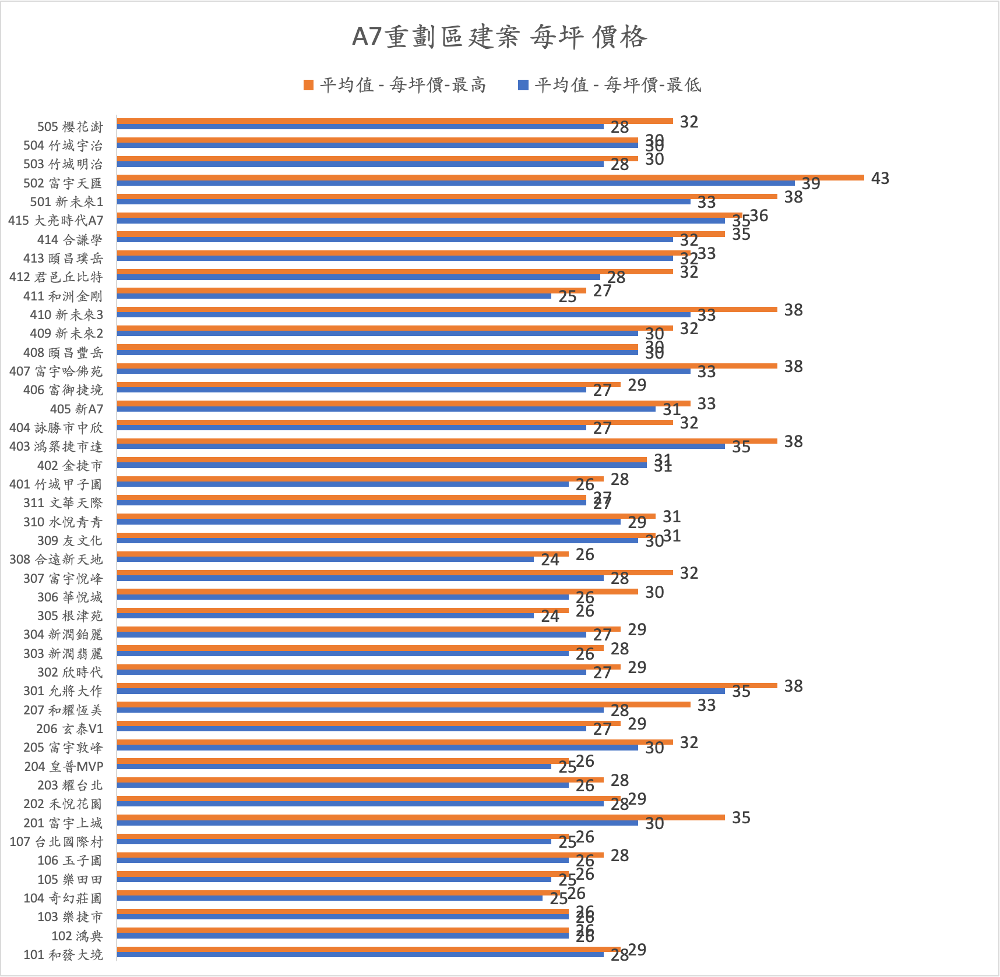
建案 建蔽率及公設比
建蔽率平均值為 46.89%, 公設比平均值為 32.62%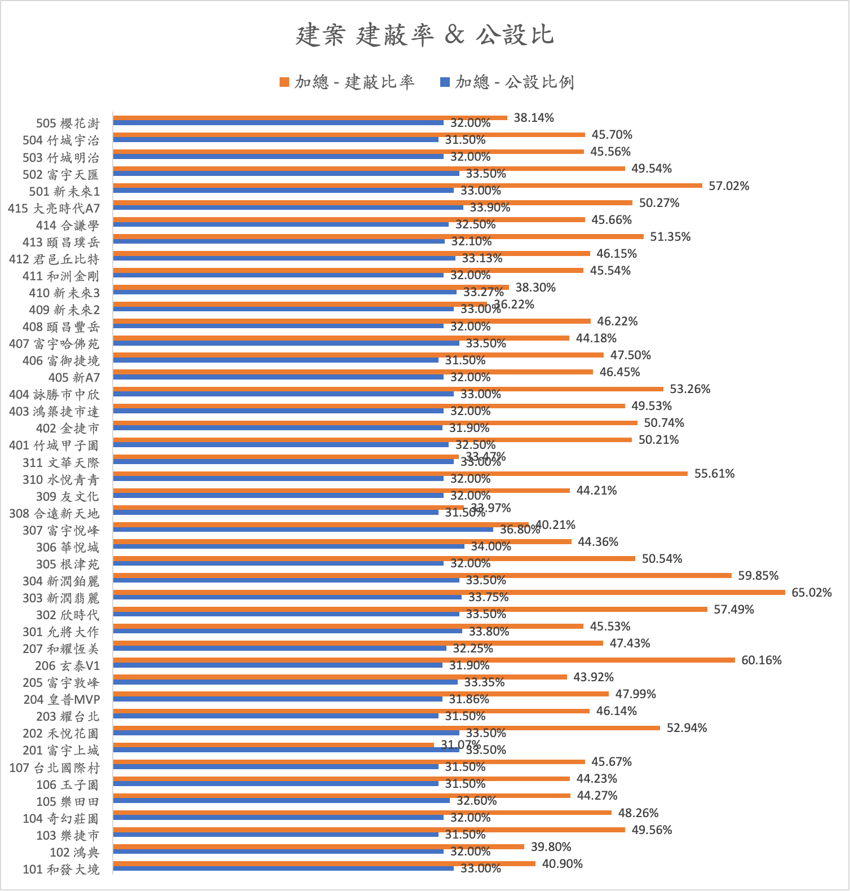
建案 基地面積 （坪）
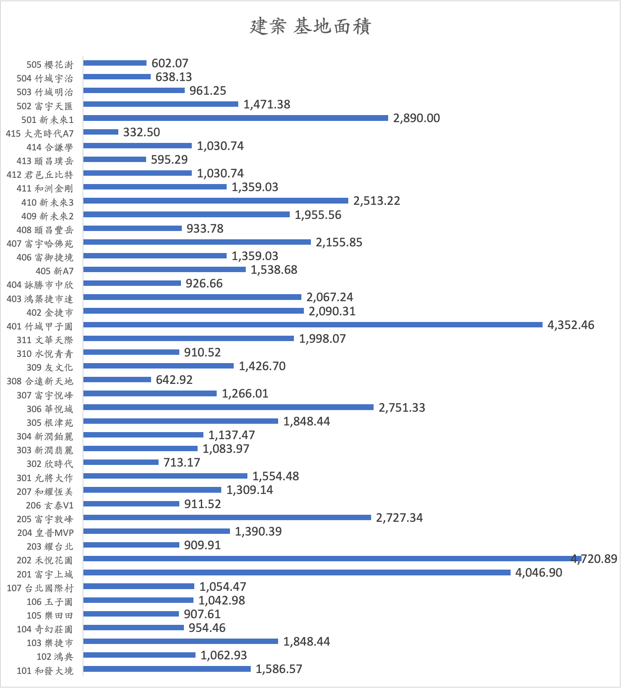
建案 樓層數
樓層高度以15層為主，最高31層，最低13層。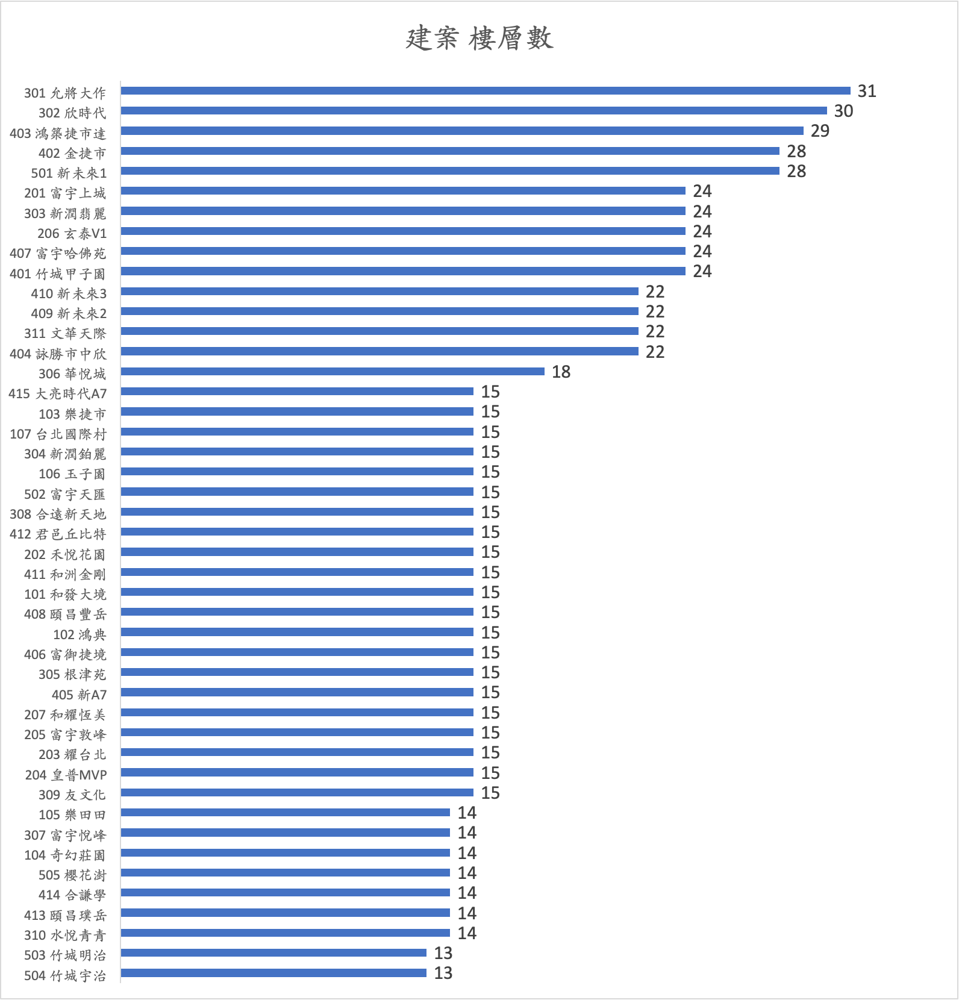
大數據分析 - 合宜住宅
相關資訊
- 樂居 入門篇：房屋總價與車位價格的關係？
- 內政部 不動產交易實價查詢 服務網 買賣查詢
- 內政部 地政司 房屋單價怎麼算？ 實價查詢網新增各種算法可自由選
- 實價登錄 QA 106/12/15 實價登錄說明
- 實價查詢 數據下載 數據分析資料：由上面官網下載資料，僅供參考
- 不動產全制霸 實價登錄的問題
- Yahoo 新聞 2021/06/04 出價要精準 專家教你解讀實價登錄
- 有巢氏房屋 簡單四步驟 教你看懂實價登錄裡的眉角
- 房地產筆記 2019/05/16: 房屋單價試算
內政部實價登錄說明
本網頁是依據內政部實價登錄網站資訊，所做的數據分析。相關內容說明如下- 交易標的：合宜住宅區多數交易包含土地＋建物＋車位，只有少數僅 土地＋建物
- 總價（萬元）：使用的總價 指交易標的的總體價格，所以多數包含了車位的價格。
- 總面積（坪）：包含主建物面積 + 公共設施分配面積 ＋ 車位面積
- 主建物佔比 (%): 指住戶房屋實際面積佔總面積的比例。是否含公設面積？ 一般業界使用的每坪價格算法A 是 （土地＋建物價格） / (住宅面積＋公社分配面積）。
- 每坪單價（萬元）：是總價 / 總面積。也就是一般業界所稱的算法B: 包含車位價格 與 車位面積的算法，此一算法與一般業界慣用的算法A：只計算 （土地＋建物價格） / （住戶住宅面積 ＋ 分配公共設施面積）不同。
- 車位總價：部分交易列明車位總價，但許多沒有列出車位價格。因此未列出車位價格的案例無法獲的算法A的每坪單價。
內政部表示，這次在網站新增建坪單價試算功能，可由使用者自行選擇是否要包括車位、共同使用部分或附屬建物的單價。例如，以含車位交易總價3000萬元，總面積80坪的房子，民眾可計算含車位的單價為37.5萬元；也可選擇剃除車位價200萬元及車位面積10坪後，計算的單價為40萬元；以及再剔除共同使用部分面積10坪後，計算的單價為46.67萬元；或是連附屬建物面積都剃除，只計算主建物面積的單價為56萬元，讓價格資訊更加透明。
內政部指出，由於有些民眾關心交易案件所占的公設多寡，所以這次網站調整，也同時新增顯示「主建物面積占建物移轉總面積之比例」的欄位，讓民眾能更清楚了解建物可使用面積的資訊。
內政部表示，不動產成交案件實際資訊申報登錄制度於101年8月實施，並從101年10月起在網站提供民眾查詢，累積可供查詢的案件已有236萬件，網站瀏覽人次已超過1億2千萬人次，已成為房地交易價格的主要參考基準，這次網站新增2項服務，要讓不動產資訊更加透明化，歡迎有需要的民眾，可至 內政部不動產交易實價查詢服務網 瀏覽查詢。
備註：在「內政部不動產交易實價查詢服務網」揭露的眾多欄位中，問題最大的是交易單價。由於官方網站交易單價是直接將總價除以坪數，忽略車位坪數及價格因素，一旦遇到涵蓋車位交易的物件，就會出現房價低於市場行情的錯覺。
拆解車位價格的方法是：舉例試算，權狀40坪物件，成交價1200萬元，其中包括車位10坪、100萬元，若沒有扣除車位，該物件的單價是1200萬除以40坪，為30萬；但若是扣除車位後，1200萬先減100萬，除以30坪，單價約36.6萬。若是不知道車位價格無法拆算，則建議用有顯示車位單價的案例，一樣可作為出算法A的單價。
房屋均價的計算方式
- 算法A: 房價與車價分開計算。房屋總價 (不含車位價格) / 房屋坪數, 此為北部地區 購房主要算法。但房屋坪數包含住宅實際坪數＋公設分配坪數，這是目前預售屋最常用的計算方式。
- 算法B: 房價與車價合併計算。（房屋總價 + 車位總價）/ (房屋坪數 ＋ 車位坪數)。這算法通常出現在實價登錄，或舊房轉賣時只談總價的計算方式。通常是最低的單價表示法。
- 算法C: 房價與車價分開計算,同時只算住房實際坪數不含公設。房屋總價 (不含車位價格)/ 房屋實際坪數 （不含公設分配）。這算法很少被使用, 也會是最高的單價表示法
合宜住宅主要建案
- 遠雄文青
- 皇翔歡喜城
- 名軒快樂家
- 麗寶快樂家
合宜住宅 轉售
A7合宜住宅有4000多戶，2015年陸續交屋，當時為了避免馬上轉手，設有5年不得買賣的限制。2021年4、5月起，陸續有合宜宅解除禁令。 1名房仲分析，當年購買合宜宅，每坪約15萬元，坪數從30到50坪不等，初衷是希望讓年輕人買得起房，目前已經逐步解除轉售狀況將帶動合宜住宅的轉售熱潮。合宜住宅房市大數據
合宜住宅區 整體數據分析: 以下每坪單價 為實價登錄使用的 算法B 的單價。因包含車位價格與一般預售屋使用的算法A 相對較低的單價。- 文青路 110年 4-6月, 排除車位、透天厝、農舍、工廠及倉庫不計算單價之案例後，共有82筆，平均單價為18.19 萬元/坪
- 文青二路 110年 4-6月，排除車位、透天厝、農舍、工廠及倉庫不計算單價之案例後，共有33筆，平均單價為16.68 萬元/坪
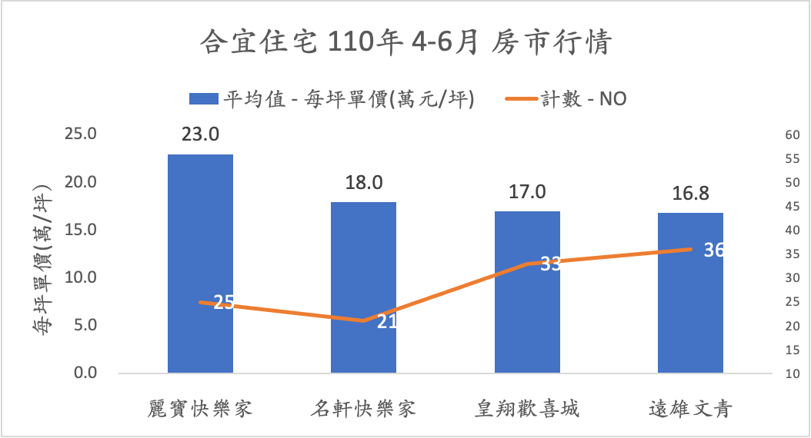
依據實價登錄官網的 每坪單價 （算法B)
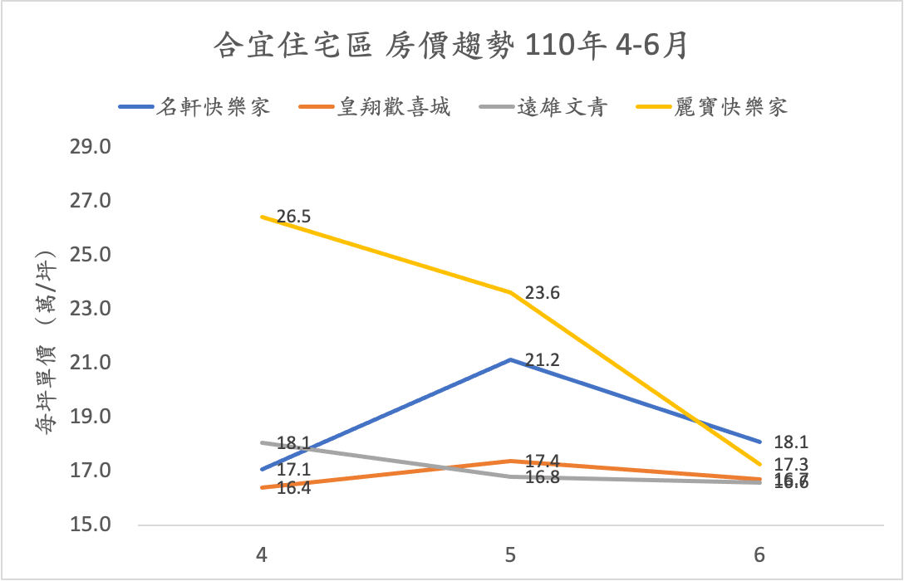
遠雄文青 交易紀錄中有多筆四房案例，其坪數較小所以總價低。因標示為四房造成遠雄文青有四房均價低於三房的異常現象。所以在舊房轉售統計數據中總價需要考量是否包含多車位及原屋主裝潢程度的不同/加隔間等附加因素。
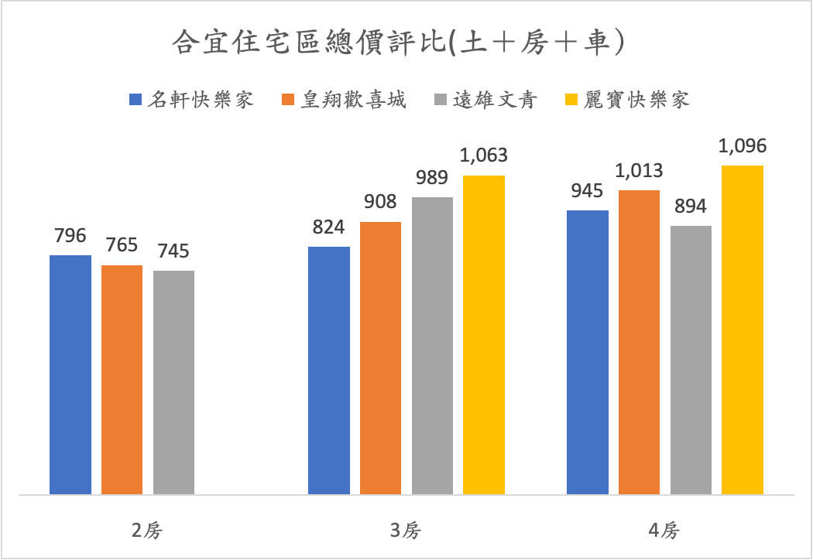
房屋坪數是總坪數（包含主建物＋公設分配＋車位面積）乘以主建物比例所得。（待確認是否包含公設分配？ ）
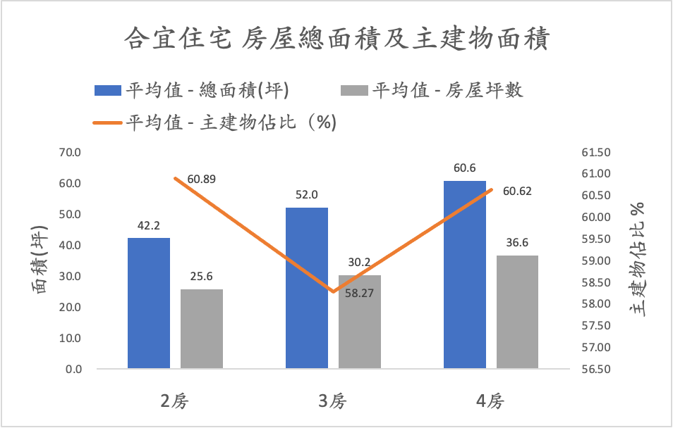
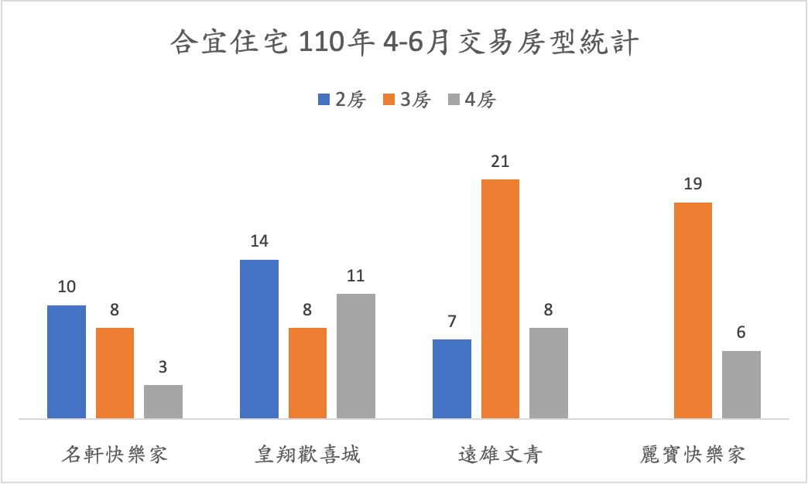
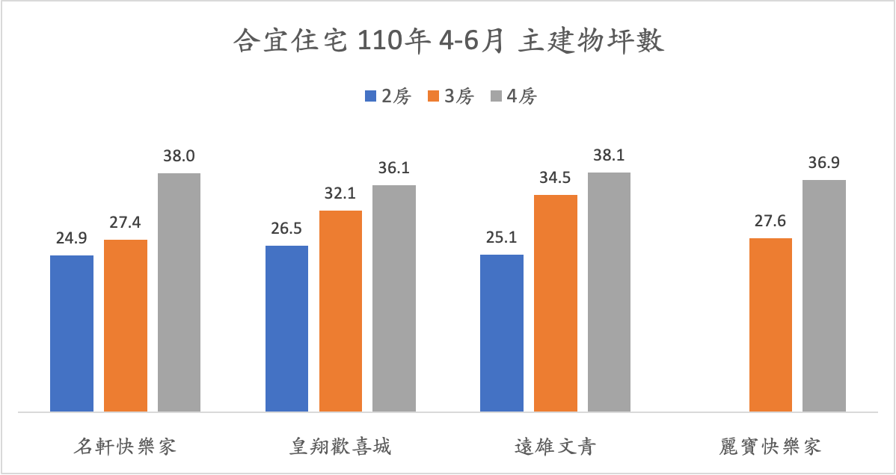
車位價格
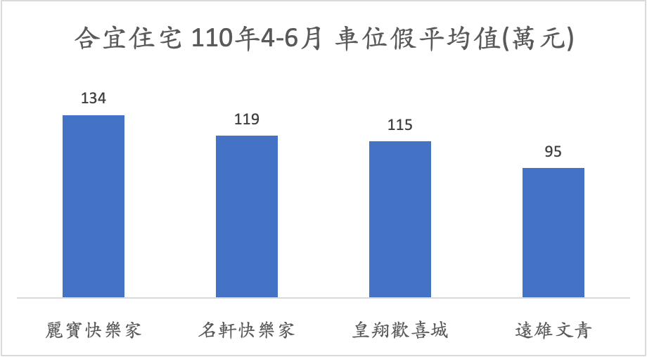
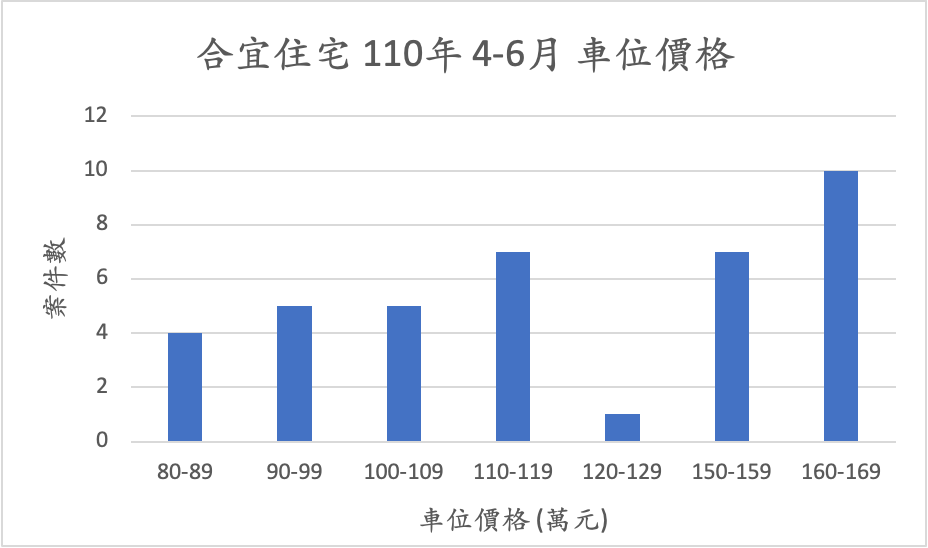
大數據分析 - 實價登錄
實價登錄網站
實價網名詞定義:房屋登記總面積/ 範例: 43.90 坪
-
1. 建物總面積： 24.31 坪
- 1.1 主建物：22.11 坪
- 1.2 陽台： 2.21 坪
-
2. 共有部分面積：19.59 坪
- 2.1 公共設施: 12.00 坪
- 2.2 車位： 7.59 坪
- 1. 主建物面積占本房屋得登記總面積之比例：50.35% = 主建物面積 22.11 坪 / 登記面積 43.90 坪
- 2. 主建物面積占本房屋得登記總面積（扣除車位面積）之比例：60.87% = 主建物面積 22.11 坪 / (登記面積-車位面積） 36.31 坪
- 房屋總價格：1,330 萬元包含
- 1. 房屋價格： 1,143 萬元
- 2. 車位價格： 187 萬元
- 每坪單價：以建物移轉總面積計算：(總價-車位價)/(總面積-車位面積)=建坪單價 ：30.6 萬元/坪 = 1,143 萬元 / (43.90 坪 - 7.59 坪)
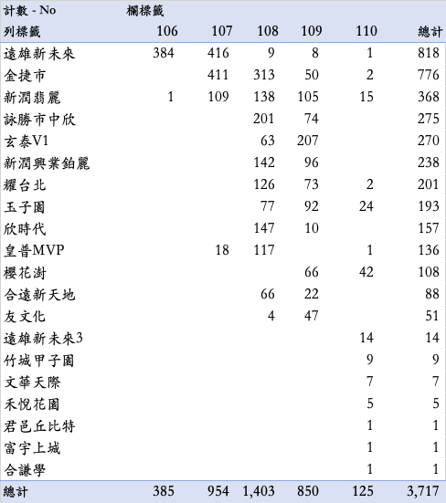
實價登錄統計 ： 實價平均數, 最高, 最低 對應於 訂價最高及最低值。表示以往訂價可議價空間之參考。 刪除1,2層商店高單價後的比較, 仍可能包含部分登錄上未標示完整項目
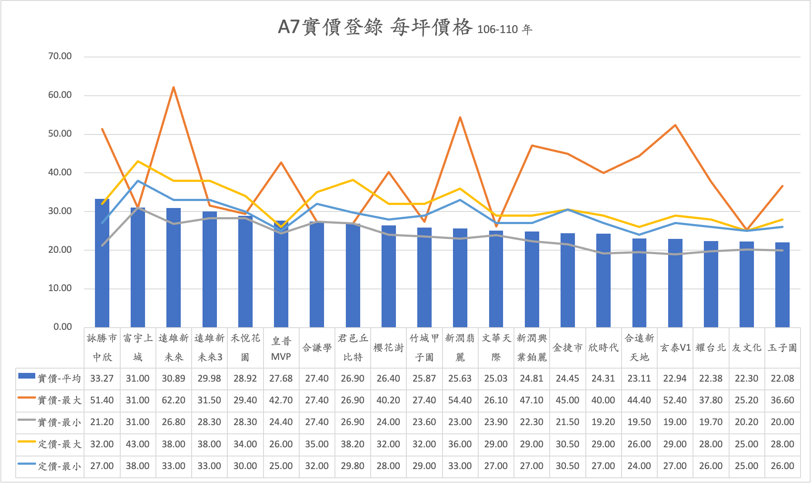
A7預售屋 大數據
各建案每坪均價 比較：注意現有實價登錄網 刪除1,2層商店高單價後的比較, 仍可能包含部分登錄上未標示完整項目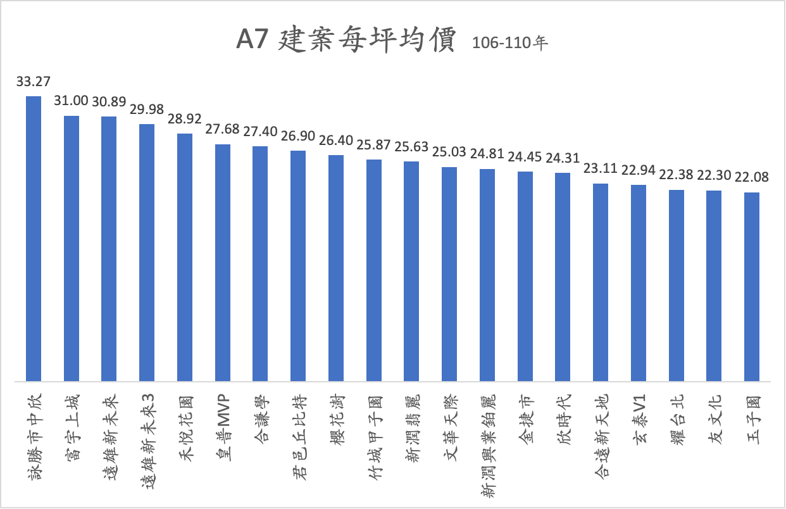
房屋總價與 房型統計
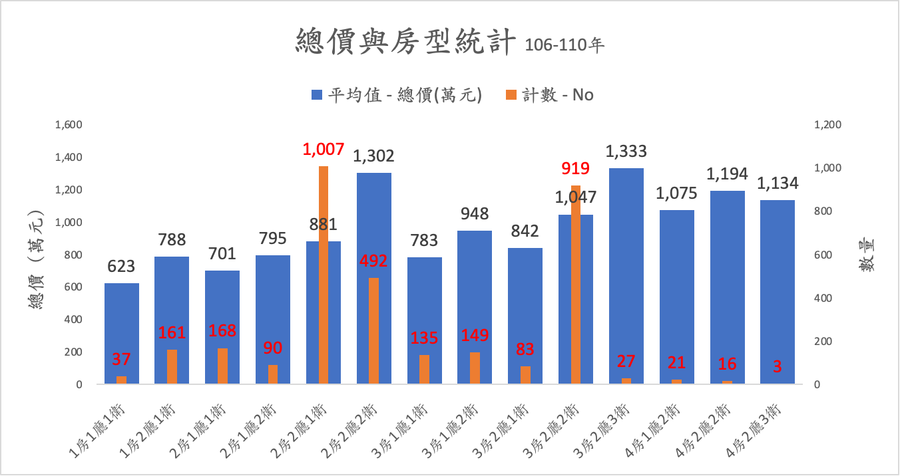
車位價格比較表
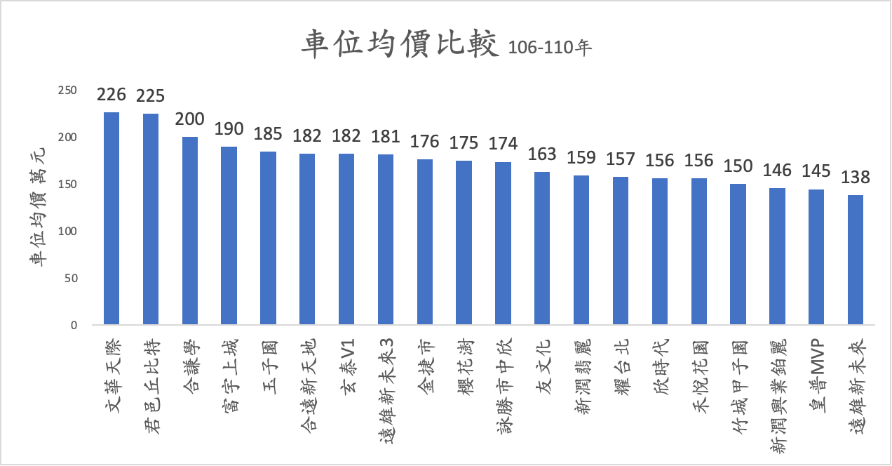
以遠雄新未來為例 各樓層 價格比較
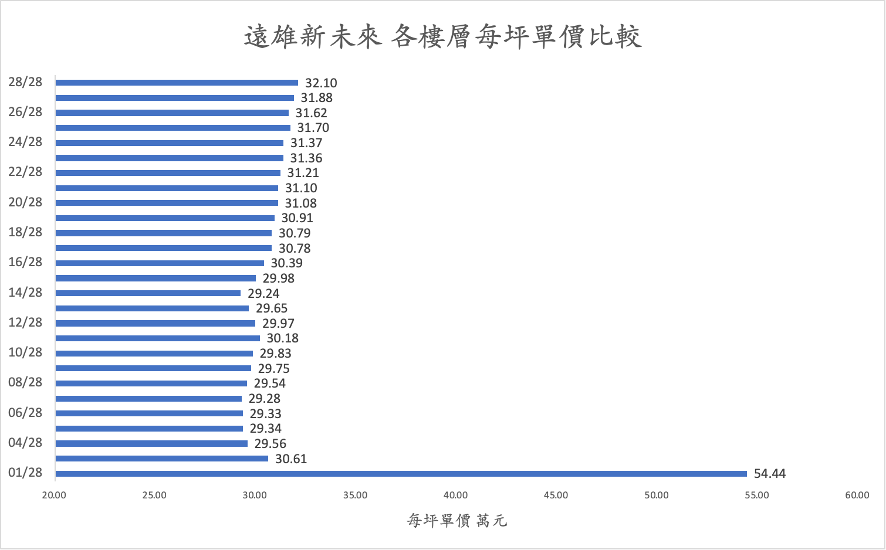